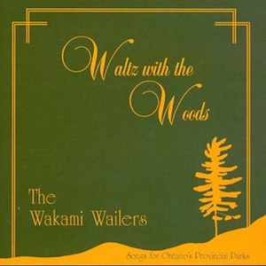

|
 |

|
| The Last of the White Pine Loggers | Waltz with the Woods | River through the Pines |
|
The Lumbercamp Song
The Bager Drive A Shantyman's Life Les Raftsmen Peter Emberley The Gatineau Girls Lost Jimmy Whelan/Julia Delany The Backwoodsman How We Got Up to the Woods Last Year Save Your Money When You're Young The Jam On Gerry's Rock The Winter Camp A Lumberjack's Legend The Last of the White Pine Loggers |
Log Drivers Waltz
John Denison The Rivermen Wakami The Castle of White Otter Lake One Last Spike Take This Land A Legend of Nanabozho Land of the Silver Birch Run to the Bay Shan's Song White Lake Swamp Stomp Waltz With the Woods |
Jimmy Judge
50,000 Lumberjacks The Town of Brandywine White Water Blue Mountain Lake The Frozen Logger Tickle Cove Pond Noble White Pine Tree Hurry Up Harry The Shantyboys Alphabet Camp at Hoovers Lake Little Brown Bulls The Fairie Blonde The Farmer's Son and the Shanty Boy The Little L'eau Pleine The Legend of the Dungarvon Whooper |